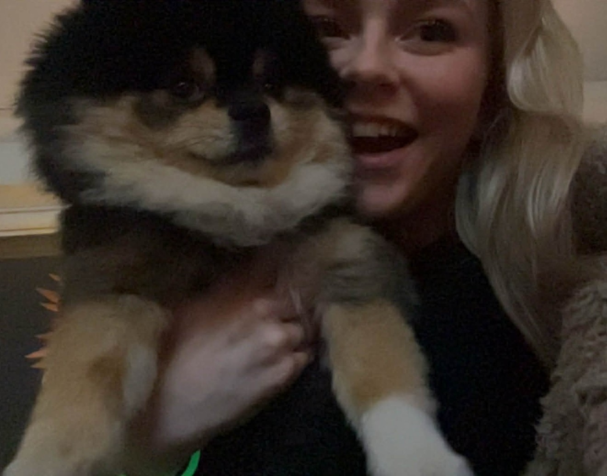
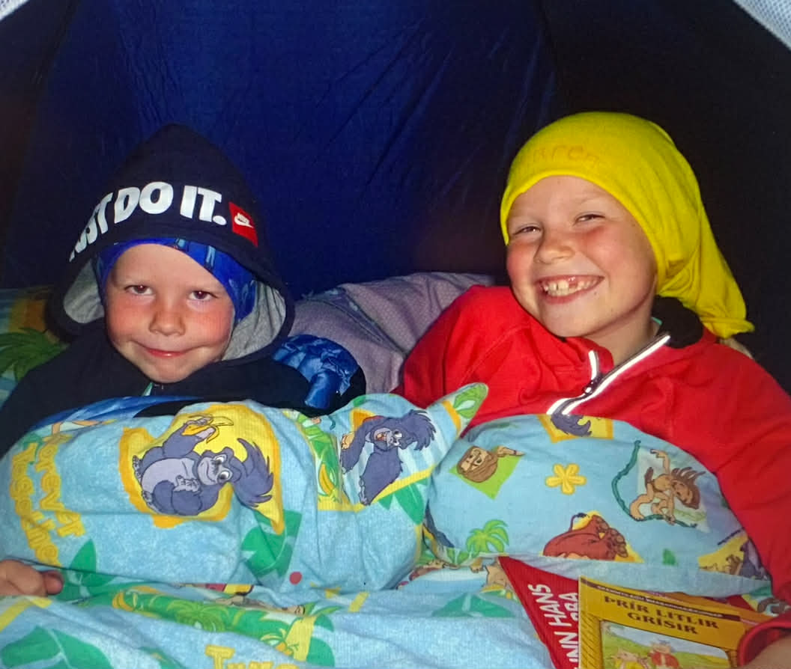
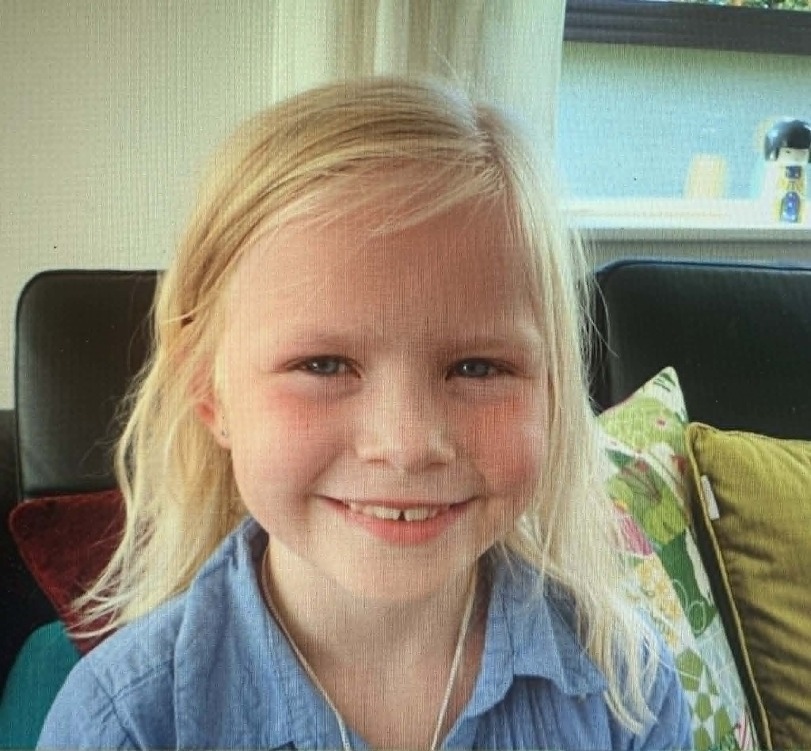

Smá um mig

Ég heiti Ylja Karen Þórðardóttir og er nemandi í vélaverkfræði við Háskóla Íslands. Á þessu ári mun ég útskrifast með BSc-gráðu og stefni á að halda áfram í MSc-nám, annað hvort í véla- eða orkuverkfræði við DTU, NTNU eða KTH. Mér finnst mjög gaman að ferðast um heiminn, hitta vini og lesa spennandi bækur.
Ég á hund sem heitir Skuggi og er af tegundinni pomeranian. Ég elska hann mjög mikið. Við förum alltaf í daglega göngutúra og hann nýtur þess sérstaklega að fara í bíltúr til ömmu og afa, aðallega vegna þess að þar bíður hans óvenju mikið af nammi.
Uppáhalds jafnan mín úr náminu er pýþagórasar reglan, a2+b2=c2 og hingað til hefur áhugaverðasti áfanginn sem ég hef tekið verið hönnun vélbúnaðar, en það á kannski eftir að breytast eftir þetta námskeið.
Ferilskrá
Skemmtilegar myndir

